Penyair
Figura central de la exposición. Golpeado, herido y sangrando mientras interpreta.
Propuesta de videoclip
Penyair · Norick
DeslizaSinopsis
En un barrio popular de Colombia, la vida cotidiana se transforma en un extraño museo al aire libre. Sobre grandes pedestales museográficos, instalados en terrazas y diferentes puntos del barrio, aparecen ocho figuras humanas completamente inmóviles, como si fueran esculturas pertenecientes a una exposición contemporánea.
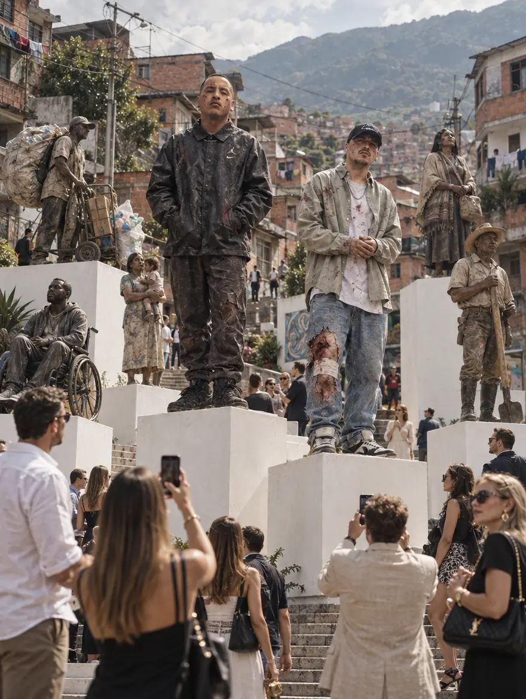
Entre ellas están Penyair y Norick, acompañados por seis personajes que representan diferentes realidades del territorio colombiano: una mujer indígena, una mujer afrocolombiana, un campesino, una madre cabeza de hogar, un reciclador y una persona en silla de ruedas.
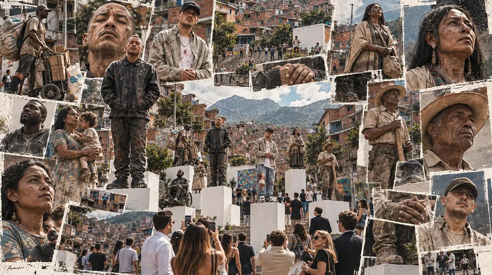
Cada uno está presentado como una pieza única. Su vestuario, sus objetos y su corporalidad hacen evidente quiénes son y de dónde vienen. Sin embargo, al estar inmóviles sobre los pedestales, dejan de ser percibidos como personas y comienzan a ser tratados como objetos de observación.
Los personajes se construyen mediante croma key para adquirir diferentes escalas: algunos aparecen enormes frente a las casas, otros sobre terrazas y otros integrados a la arquitectura. Parecen verdaderas esculturas humanas instaladas en un territorio que nunca fue pensado como museo.
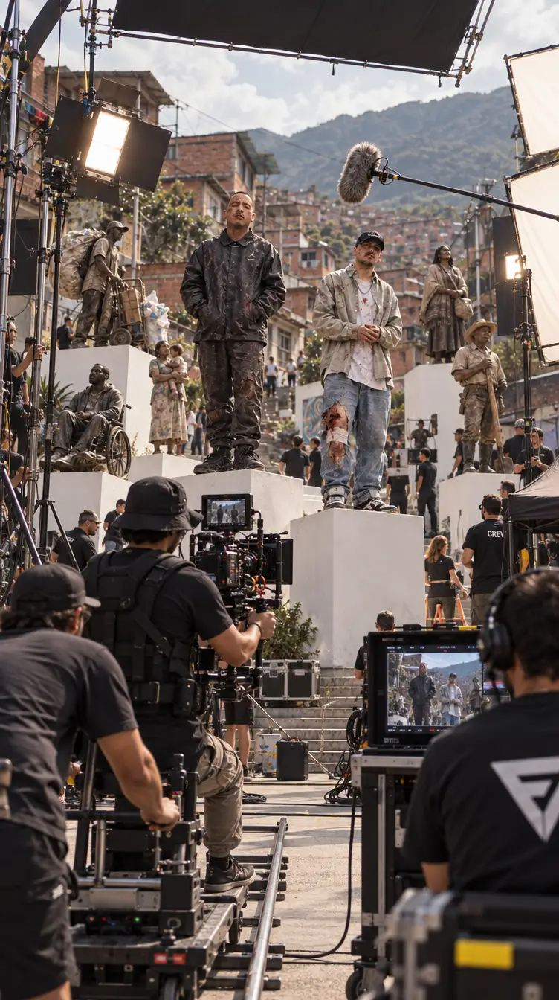
Los protagonistas
Visiblemente golpeado y herido desde su primera aparición. Su rostro, brazos y piernas llevan las marcas de la violencia. Incluso mientras interpreta y rapea, continúa sangrando: su propio cuerpo es una imagen permanente de violencia expuesta ante los demás.
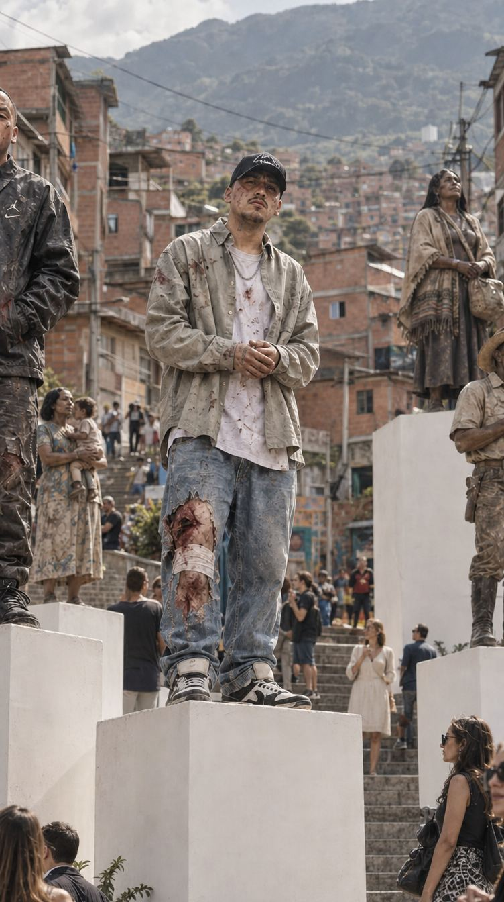
También golpeado. Durante la parte diurna mantiene una herida de bala en una pierna. Al igual que Penyair, continúa interpretando mientras sangra: la violencia no es un elemento aislado, sino una condición permanente de ambos dentro del museo.
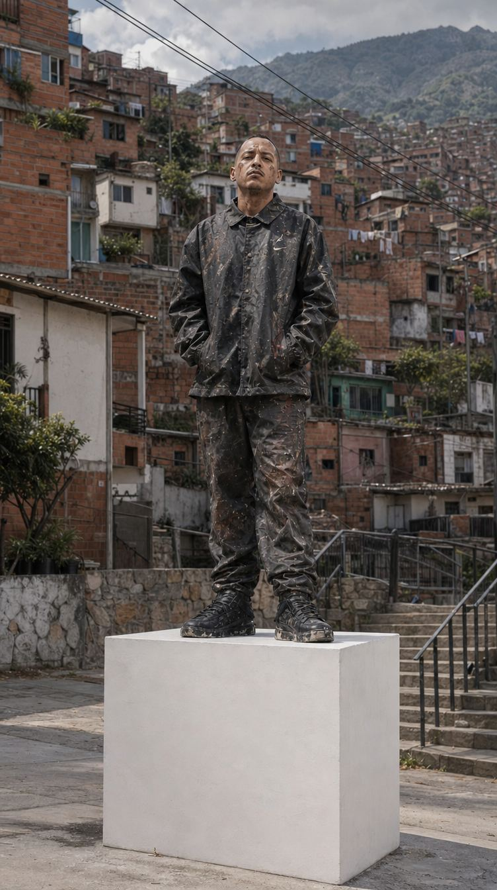
Las heridas forman parte de la propia obra que los visitantes están observando. Una persona herida convertida en pieza de museo que, a pesar de su condición, continúa interpretando.
Entonces aparecen
Un grupo de turistas extranjeros y personas de una clase social evidentemente privilegiada recorre el barrio como quien visita una atracción. Su vestuario, sus accesorios, sus cámaras, sus celulares y la seguridad con la que ocupan el espacio dejan clara la diferencia económica con quienes están siendo exhibidos.
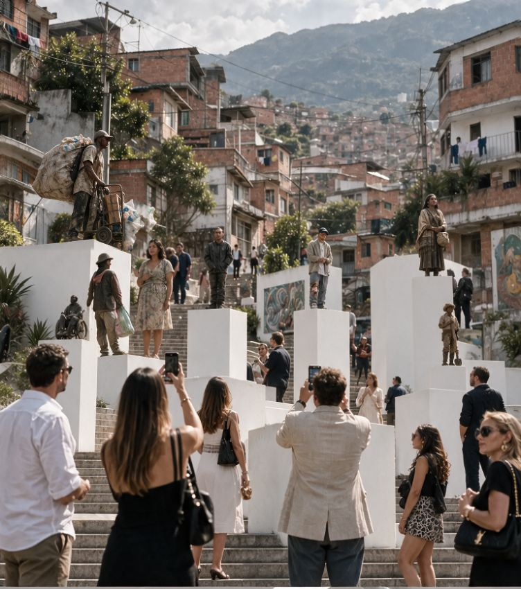
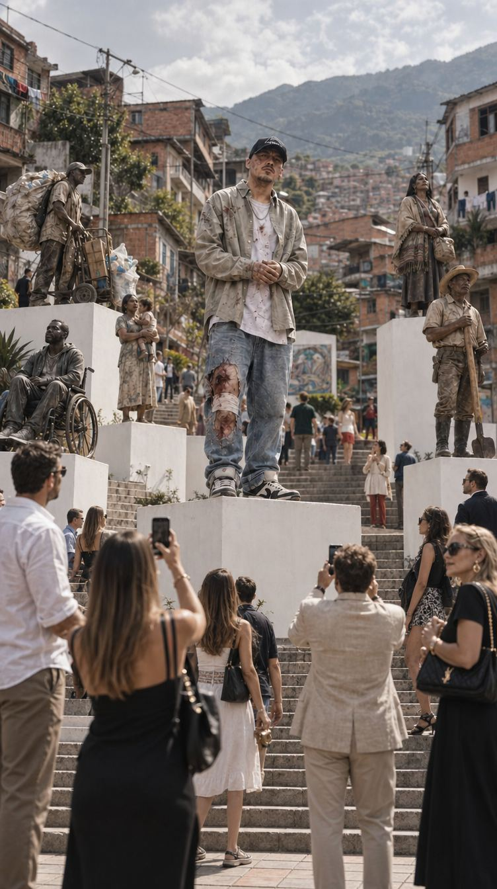
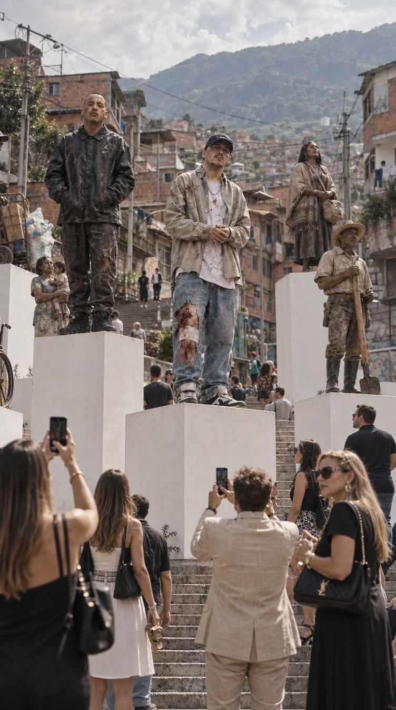
Los turistas pueden observar a Penyair herido mientras continúa rapeando. Pueden fotografiar a Norick mientras sangra por la pierna. La violencia que atraviesa los cuerpos se convierte, dentro de la lógica del museo, en otra característica de la obra.
El barrio se convierte en un espectáculo.
Y sus habitantes, en parte de ese espectáculo.
Ocho piezas
Cada personaje tiene una identidad visual clara y reconocible, evitando caricaturas. Ninguno es presentado desde la lástima.
Figura central de la exposición. Golpeado, herido y sangrando mientras interpreta.
Figura central. Herida de bala visible en una pierna durante el día.
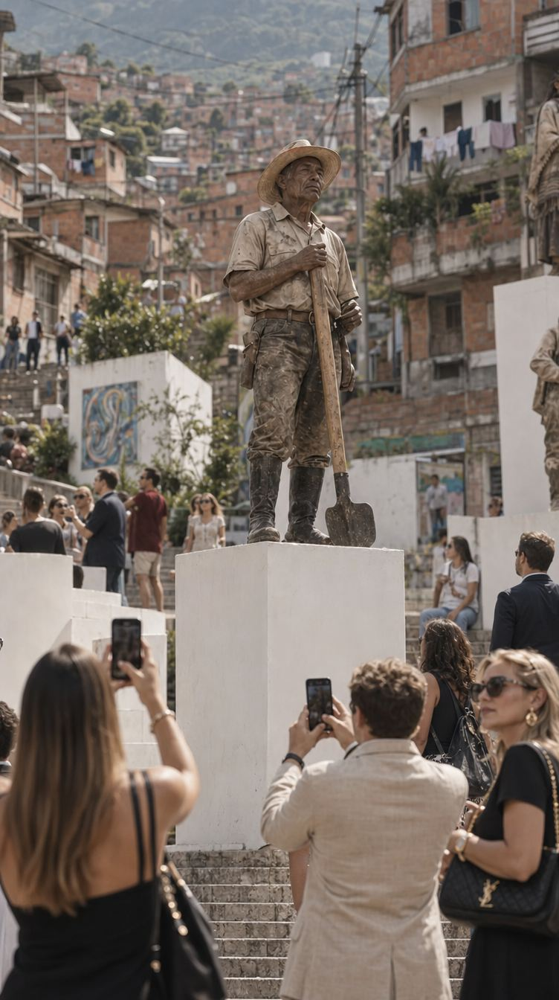
Vestuario de trabajo, botas, herramientas y objetos del campo: alguien extraído de su contexto y convertido en pieza de museo.
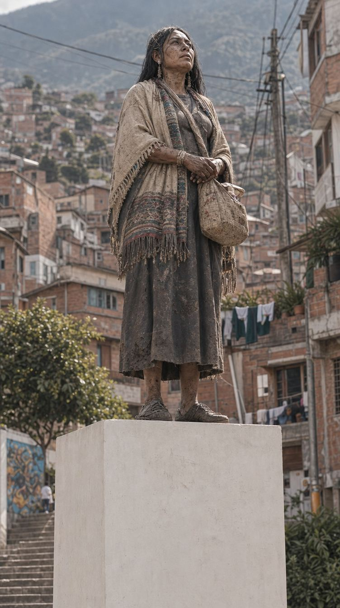
Vestuario basado en referencias culturales reales y específicas, sin mezclar símbolos de distintas comunidades. Identidad, no exotismo.
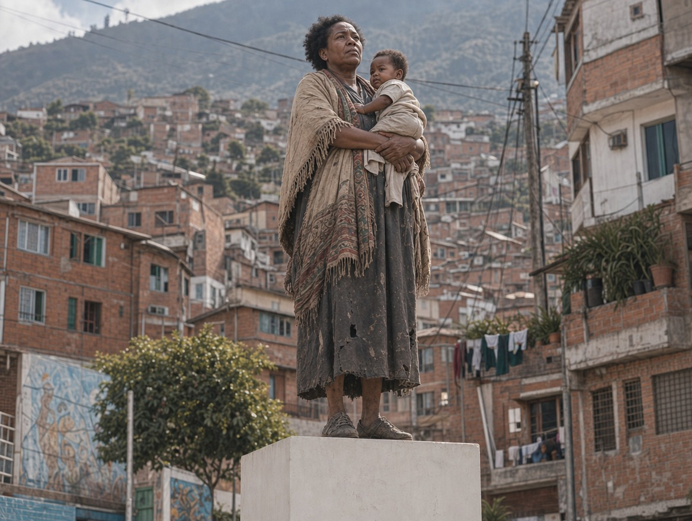
Presencia contemporánea y contundente, lejos de la representación folclórica; completamente integrada al presente.
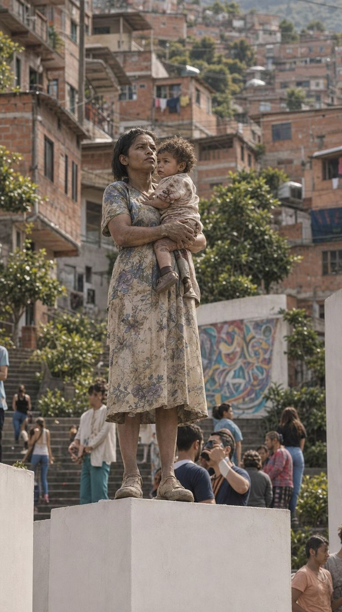
Vestuario cotidiano y objetos domésticos (canasta, utensilios, ropa) que luego se convierten en coreografía.
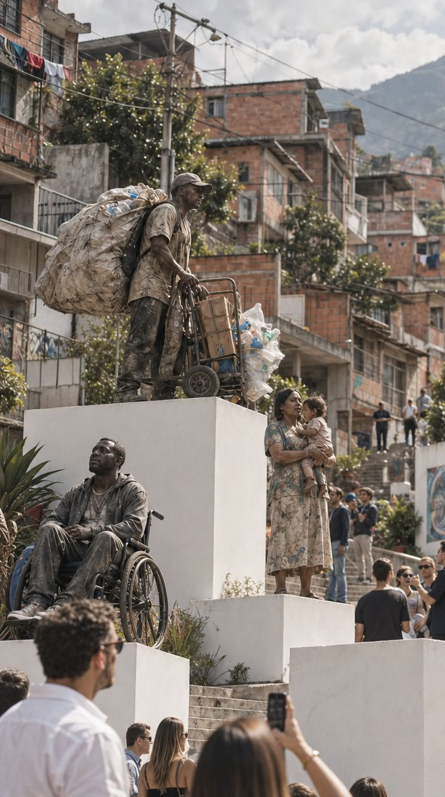
Carreta, costales, cartones y plásticos como parte fundamental de su identidad visual y de su performance.
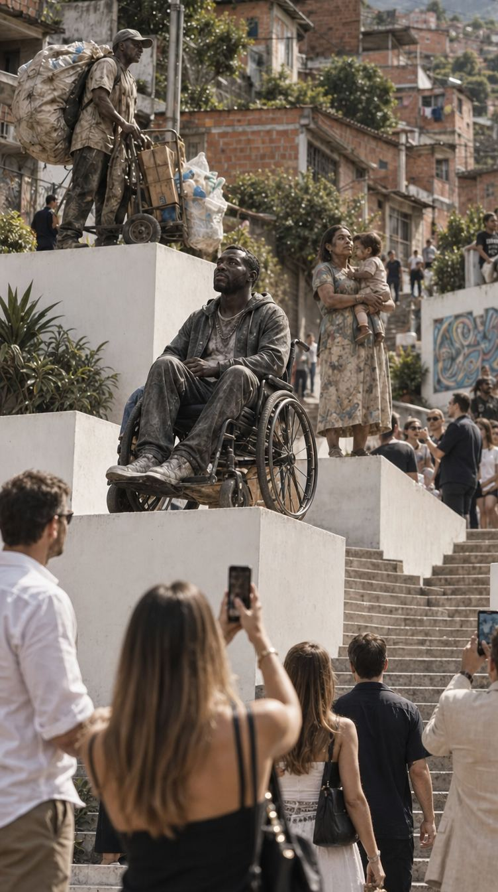
La silla hace parte de la composición, pero el personaje no se construye desde la lástima: presencia activa y el mismo peso narrativo que los demás.
Pero algo empieza a cambiar
Las figuras abandonan lentamente su condición de esculturas y los pedestales dejan de ser lugares de exhibición para convertirse en escenarios. La música despierta el espacio y los demás personajes desarrollan sus propios performances: el reciclador atraviesa el barrio con su carreta, el campesino con sus herramientas, la mujer indígena con presencia corporal propia, la madre convierte lo doméstico en coreografía, la mujer afrocolombiana ocupa el espacio con fuerza y la persona en silla de ruedas atraviesa el escenario.
Las escaleras se convierten en escenarios. Las terrazas, en plataformas. Las fachadas, en fondos. Los cables, las puertas, las ventanas y la ropa tendida dejan de ser paisaje y forman parte de una gran puesta en escena.
Penyair y Norick miran directamente a los turistas. La cámara abandona el punto de vista del visitante y muestra a los turistas desde la perspectiva de quienes viven en el barrio. Los observados empiezan a observar.
La pobreza deja de ser una postal.
El barrio deja de ser un objeto turístico.
Las personas dejan de ser piezas de exposición.
Concepto general
Una inversión de la mirada. Un barrio popular de Colombia se convierte en un museo humano en el que personas reales son presentadas como esculturas para ser observadas por personas de una clase social privilegiada. La diferencia económica debe ser evidente desde la primera aparición de los visitantes.
Los turistas pueden contemplar la violencia desde una posición segura. Pueden fotografiarla, observarla, incluso sonreír frente a ella. Pero no tienen que vivirla. Esta es una de las contradicciones centrales de la propuesta.
La referencia a la pornomiseria aparece desde ahí: cuando una realidad de desigualdad deja de ser entendida como problemática social y empieza a ser consumida como imagen.
Por eso los pedestales son fundamentales. Un pedestal normalmente eleva una obra y la separa del espectador. Aquí, la persona está elevada, pero al mismo tiempo reducida a un objeto.
La intención no es representar al barrio desde la compasión ni construir una imagen romántica de la pobreza, sino mostrarlo como un territorio vivo, contradictorio y lleno de identidad.
El barrio no es el espectáculo.
El barrio es quien observa el espectáculo.
Dirección de arte
La dirección de arte se construye sobre el contraste entre museo y territorio popular. No se interviene excesivamente el barrio: se aprovecha su arquitectura real para que los elementos museográficos parezcan objetos extraños instalados dentro de una comunidad.
Grandes, blancos, geométricos y minimalistas; apariencia limpia, contemporánea, casi institucional. Algunos bajos y otros muy altos para jugar con las escalas.
Terrazas, escaleras, fachadas, ventanas, cables, ropa tendida y puertas permanecen visibles. Los pedestales son prácticamente lo único artificial.
Prendas costosas, relojes, gafas, cámaras profesionales, celulares de alta gama y bolsos de viaje. No villanos caricaturescos: una clase que entra, consume la experiencia y se va.
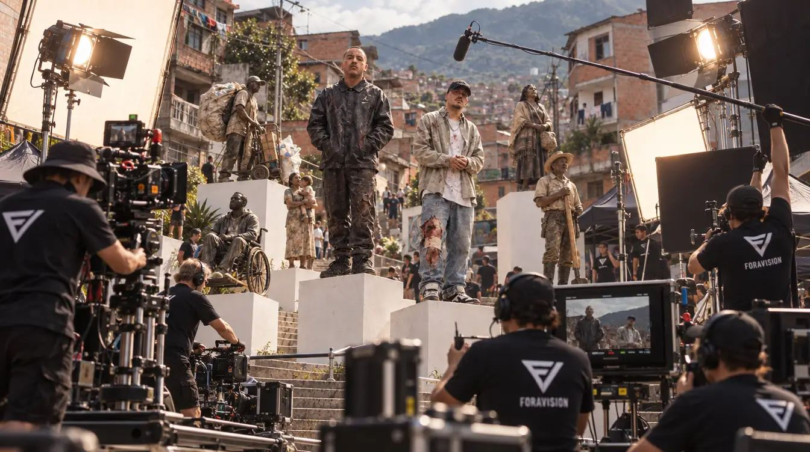
Estética realista, paleta controlada y ligeramente desaturada. Las heridas destacan de forma natural, sin caer en lo gore. Más contraste y fuerza durante los performances.
El tramo final
La historia abandona el día y entra en la noche. En una terraza a gran altura, con una ciudad colombiana extendiéndose detrás, aparecen Penyair y Norick juntos para el performance principal. Esta vez ya no están solos: los acompañan la mujer indígena, la mujer afrocolombiana, el campesino, la madre, el reciclador y la persona en silla de ruedas, cada uno en un nivel distinto de la terraza.
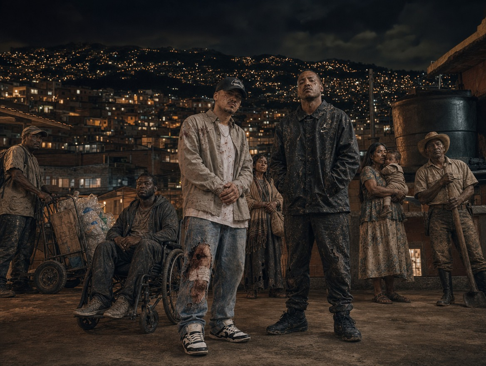
Por primera vez, Penyair y Norick aparecen sin la condición de cuerpos exhibidos y heridos. Las heridas y la sangre dejan de dominar la imagen. Lo que queda es la presencia, la identidad, la fuerza colectiva.
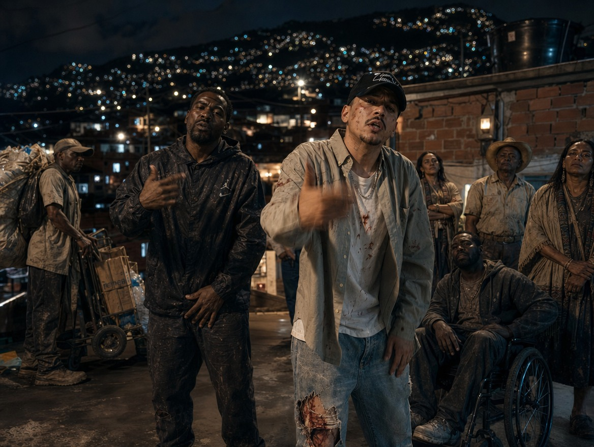
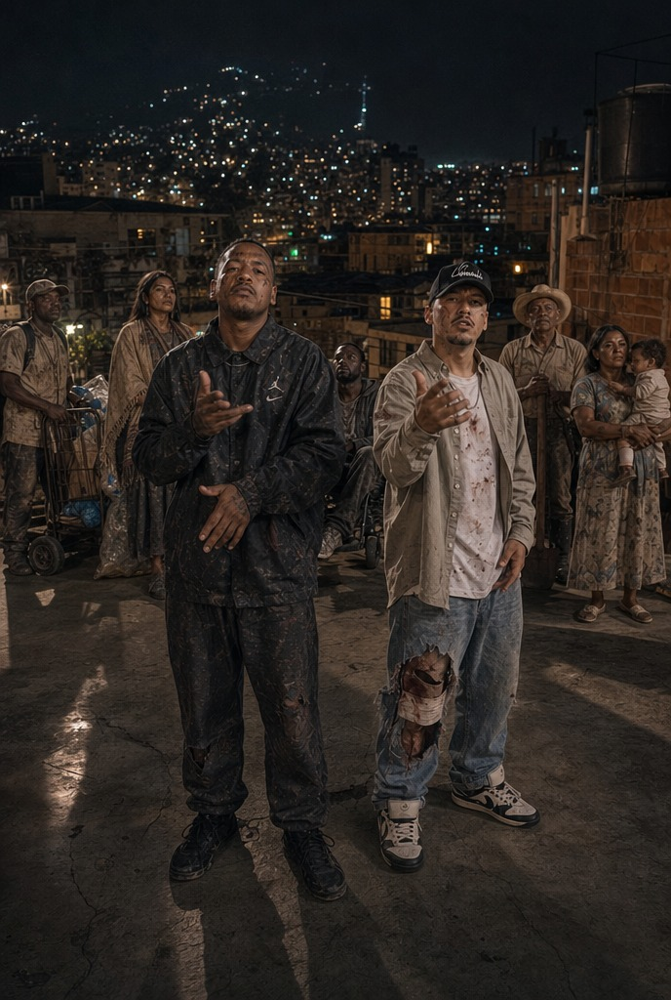
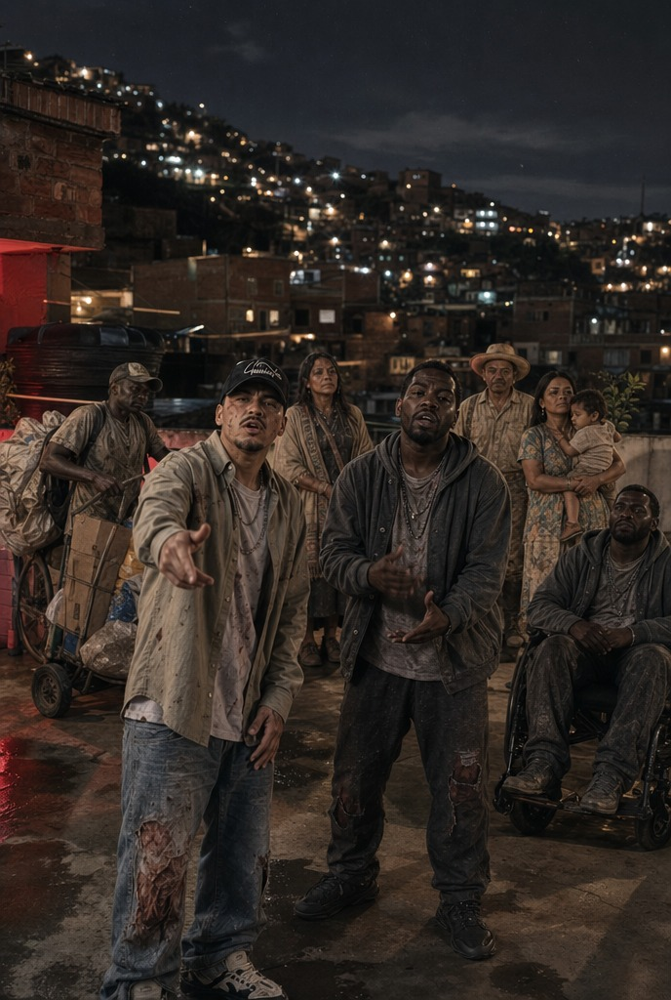
La composición parece una gran escultura humana colectiva, pero con una diferencia fundamental: nadie está sobre un pedestal. Ya no están los turistas ni los espectadores. Ya no existe el museo. Ahora los que fueron observados ocupan el centro de la imagen y tienen el control de la mirada.
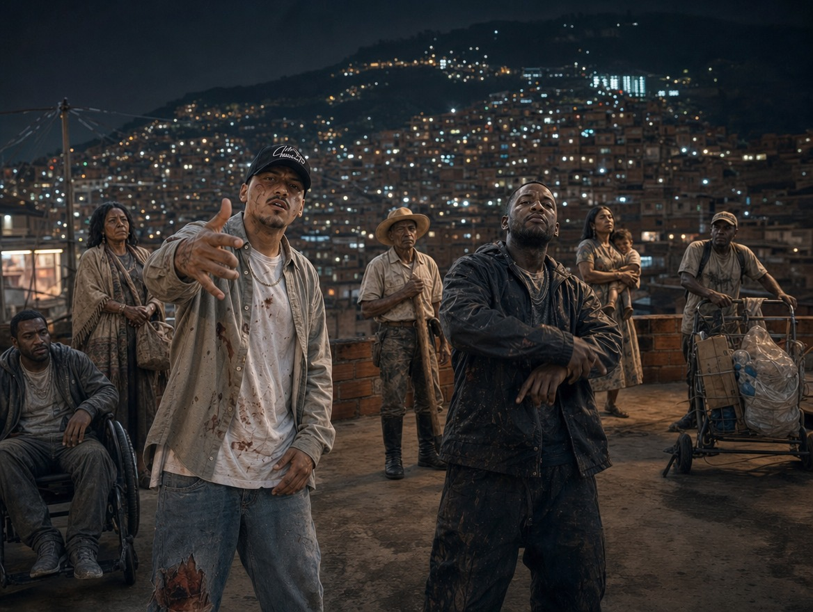